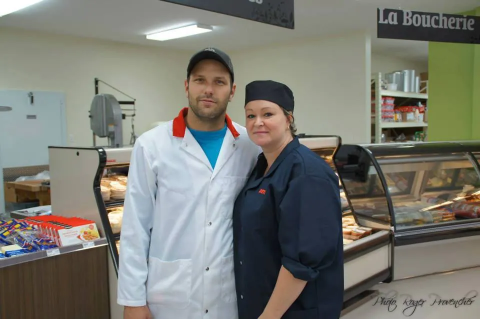
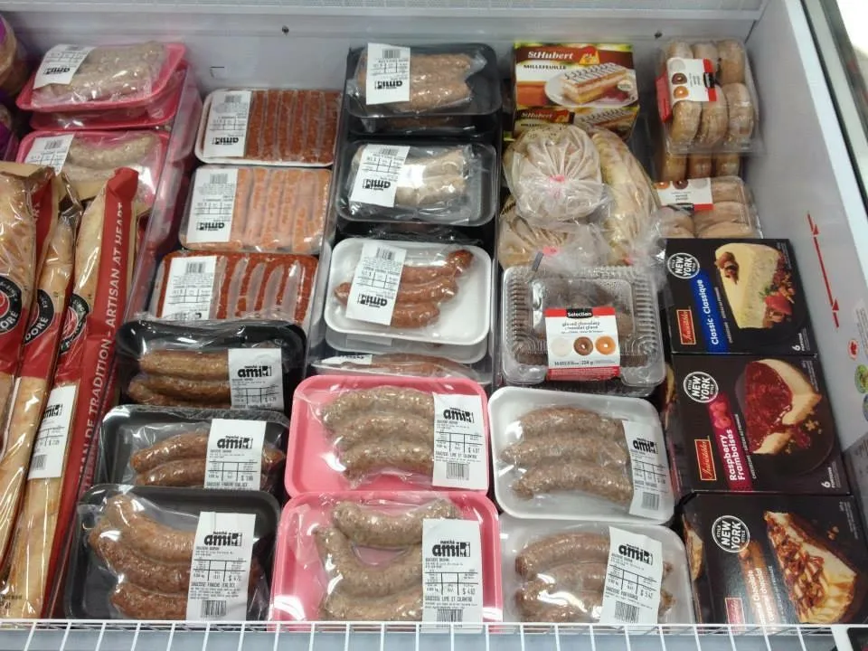
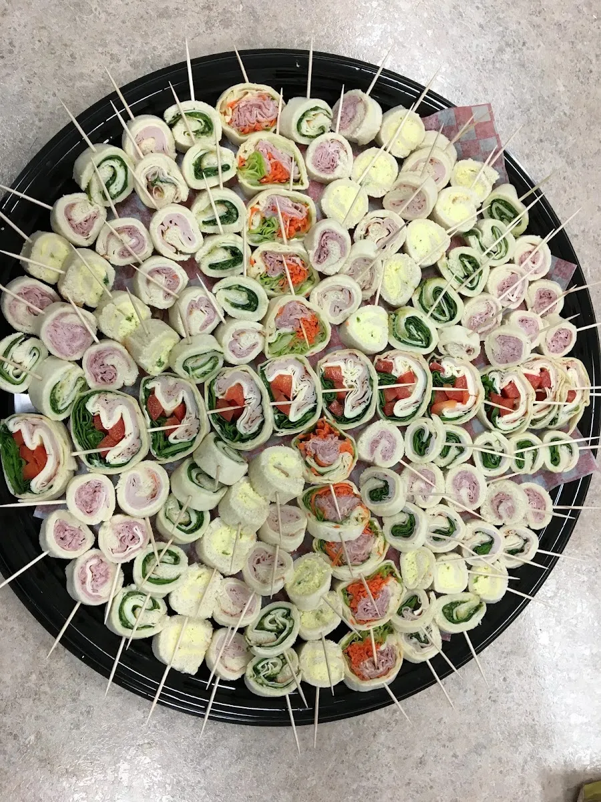

Boucherie et épicerie au cœur de Sainte-Ursule : coupes fraîches, menus pour le congélateur, buffets froids et dépeçage de gibier.

Les services mis de l'avant par la boucherie sur sa page Facebook. Les détails (formats, prix, délais) sont à confirmer en magasin*.


« On est chanceux d'avoir une boucherie/épicerie comme celle-ci dans le petit village de Sainte-Ursule! Merci d'être là et pour tout votre beau travail. »
« très bonne viande fraîche avec un très bon service et a prix très raisonnable »
« Épicerie et boucherie de village, proche des gens, des produits de qualité avec un personnel sympathique et courtois et professionnel, qui rends de fier service aux gens des alentours, un service essentiel »
Menus congélateur, buffets froids ou dépeçage : appelez-nous pour planifier votre commande.
Appeler (819) 228-9385 Suivre sur Facebook